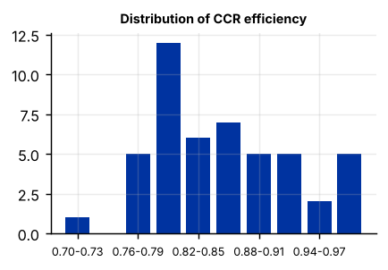

Run this model on your own data in Open Econometric Systems →
Step 1The question and the model
Which units are efficient, how far are the others from them, and which units should they copy? For unit \(o\) with inputs \(x_o\) and outputs \(y_o\), the input-oriented CCR score is the smallest \(\theta\) such that a mix of the other units, with weights \(\lambda\), uses no more than \(\theta x_o\) of the inputs and produces at least \(y_o\):
Adding \(\sum_j \lambda_j = 1\) gives the BCC score (variable returns to scale). Scale efficiency is CCR divided by BCC. A score of 1 means that no combination of other units does better. The units with positive weights \(\lambda_j\) are the peers of unit \(o\). DEA has no error term: noise counts as inefficiency, and the frontier is built from the sample.
How to write it: the model
We apply input-oriented DEA to the 48 contiguous U.S. states in 1986, with gross state product as the output and private capital and employment as the inputs. We compute CCR (constant returns) and BCC (variable returns) technical efficiency, scale efficiency and the returns to scale of each state, list the reference peers of the least efficient states, rank the efficient states by super-efficiency, and check the sensitivity of the results to the choice of orientation, of inputs and of outliers, and the small-sample bias in a simulation.
Step 2Load the data
import numpy as np
import pandas as pd
import oes_engine as oes # pip install -e open-econometric-systems/oes-engine
d = pd.read_csv("produc_1986.csv")
print(len(d), "states in", d.year.iloc[0])
print(d[["gsp", "pc", "emp"]].describe().round(0).loc[["mean", "min", "max"]])
print("output per worker (gsp/emp): mean", round((d.gsp / d.emp).mean(), 2), ", highest:", d.assign(ap=d.gsp / d.emp).nlargest(3, "ap")[["state", "ap"]].round(2).values.tolist())48 states in 1986
gsp pc emp
mean 75458.0 72260.0 2050.0
min 7585.0 6939.0 196.0
max 464550.0 363780.0 11258.0
output per worker (gsp/emp): mean 36.14 , highest: [['WYOMING', 55.37], ['LOUISIANA', 45.12], ['TEXAS', 42.09]]How to read it
There are 48 states in 1986. Gross state product averages 75,458 (millions of dollars), private capital 72,260 and employment 2,050 (thousands), and the largest state is more than 60 times the smallest in output. Output per worker averages 36.1 and is highest in Wyoming (55.4), Louisiana (45.1) and Texas (42.1). Wyoming is an extreme point and will shape the frontier.
Step 3Score the units
spec = dict(inputs=["pc", "emp"], outputs=["gsp"], label="state")
r = oes.run("dea", d.to_csv(index=False), spec)
oes.summary(r)
oes.show(r, "DEA efficiency scores")
oes.show(r, "Returns to scale")
oes.plot(r)Units: 48
Mean CCR efficiency: 0.862
Mean BCC efficiency: 0.899
Mean scale efficiency: 0.96
Units on the CCR frontier: 4
DEA efficiency scores (input-oriented)
Mean Std. dev. Minimum Median Maximum Share efficient
Score
Technical efficiency, constant returns (CCR) 0.8623 0.0703 0.7030 0.8521 1.0 0.0833
Pure technical efficiency, variable returns (BCC) 0.8987 0.0686 0.7292 0.8945 1.0 0.1875
Scale efficiency (CCR / BCC) 0.9603 0.0458 0.8001 0.9778 1.0 0.0833
Note: 48 decision-making units, 2 inputs, 1 outputs. A score of 1 means the unit is on the frontier.
Returns to scale
Units Share
Type
increasing 40 0.8333
constant 4 0.0833
decreasing 4 0.0833
Note: Constant where CCR = BCC; decreasing where the non-increasing-returns frontier equals BCC; increasing otherwise.
How to read it
Mean technical efficiency under constant returns (CCR) is 0.862: on average a state could produce its output with 86% of its capital and labour, if it matched the best combination of the others. Four states are on the CCR frontier (8%). Under variable returns (BCC) the mean is 0.899 and nine states (19%) are efficient: states that are efficient only because no larger or smaller state is comparable are counted as efficient. The ratio, scale efficiency, has a mean of 0.960 and a minimum of 0.800. Returns to scale are increasing for 40 of the 48 states, constant for 4 and decreasing for 4: most states are smaller than their efficient scale. The histogram shows the CCR scores between 0.70 and 1.
Step 4Peers and super-efficiency
oes.show(r, "Least efficient")
oes.show(r, "Average potential")
rs = oes.run("dea", d.to_csv(index=False), dict(spec, super="yes"))
oes.show(rs, "Super-efficiency")Least efficient units and their reference peers (CCR)
CCR BCC Scale Returns to scale Peers (weights)
Unit
SOUTH_CAROLINA 0.7030 0.7292 0.9639 increasing WYOMING (0.17), CALIFORNIA (0.08)
ALABAMA 0.7771 0.7886 0.9854 increasing WYOMING (0.54), CALIFORNIA (0.09)
MISSISSIPPI 0.7797 0.8172 0.9541 increasing WYOMING (0.25), CALIFORNIA (0.05)
NORTH_CAROLINA 0.7813 0.7936 0.9846 increasing CALIFORNIA (0.15), NEW_YORK (0.06)
MAINE 0.7824 0.8770 0.8921 increasing NEW_YORK (0.02), CALIFORNIA (0.02)
NEVADA 0.7916 0.8557 0.9251 increasing WYOMING (0.29), CALIFORNIA (0.03)
DELAWARE 0.7977 0.9449 0.8443 increasing WYOMING (0.03), CALIFORNIA (0.02)
VERMONT 0.8001 1.0000 0.8001 increasing CALIFORNIA (0.01), NEW_YORK (0.01)
UTAH 0.8007 0.8651 0.9256 increasing WYOMING (0.09), CALIFORNIA (0.04)
TENNESSE 0.8016 0.8203 0.9772 increasing CALIFORNIA (0.14), WYOMING (0.10)
WEST_VIRGINIA 0.8083 0.8311 0.9726 increasing WYOMING (0.64), CALIFORNIA (0.03)
NORTH_DAKOTA 0.8097 0.8786 0.9216 increasing WYOMING (0.53), CALIFORNIA (0.01)
SOUTH_DAKOTA 0.8099 0.9629 0.8411 increasing WYOMING (0.12), CALIFORNIA (0.02)
INDIANA 0.8102 0.8155 0.9935 increasing WYOMING (0.60), CALIFORNIA (0.15)
GEORGIA 0.8119 0.8251 0.9840 increasing CALIFORNIA (0.16), NEW_YORK (0.04)
Average potential input saving (CCR)
Mean observed Mean at the frontier Saving
Input
pc 72259.9708 64488.5183 0.1075
emp 2049.9229 1831.1950 0.1067
Note: Radial targets only; slacks are not added.
Super-efficiency (Andersen-Petersen, CCR)
Super-efficiency
Unit
WYOMING 1.2274
RHODE_ISLAND 1.0438
CALIFORNIA 1.0281
NEW_YORK 1.0165
CONNECTICUT 0.9841
NEW_JERSEY 0.9615
TEXAS 0.9499
MASSACHUSETTS 0.9372
ILLINOIS 0.9260
LOUISIANA 0.9249
Note: Each unit is excluded from its own reference set; values above 1 rank the efficient units.How to read it
The least efficient state is South Carolina (CCR 0.703): it should be able to produce its output with 70% of its inputs by combining 0.17 of Wyoming and 0.08 of California. Alabama (0.777) and Mississippi (0.780) follow, with Wyoming as the main peer. The units with the largest gap between CCR and BCC are small states, such as Vermont (CCR 0.800, BCC 1.000), Delaware (scale 0.844) and South Dakota (0.841): they are efficient for their size, and the gap is scale. The potential saving is 10.8% of capital and 10.7% of employment in total, less than the 13.8% (1 - 0.862) that the mean score suggests, because the large states are the more efficient ones. Super-efficiency (the score when the unit is left out of its own reference set) ranks the four efficient states: Wyoming 1.227, Rhode Island 1.044, California 1.028 and New York 1.017; Wyoming is far above the others.
Step 5Robustness: orientation, inputs and outliers
ro = oes.run("dea", d.to_csv(index=False), dict(spec, orientation="output"))
print("output orientation, mean CCR / BCC / scale:", [round(row[1], 3) for row in ro["tables"][0]["rows"]])
print("input orientation, mean CCR / BCC / scale:", [round(row[1], 3) for row in r["tables"][0]["rows"]])
r1 = oes.run("dea", d.to_csv(index=False), dict(spec, inputs=["emp"]))
print("employment only: mean CCR", r1["summary"][1]["value"], ", units on the frontier", r1["summary"][4]["value"])
r3 = oes.run("dea", d.to_csv(index=False), dict(spec, inputs=["pc", "emp", "pcap", "util"]))
print("four inputs: mean CCR", r3["summary"][1]["value"], ", units on the frontier", r3["summary"][4]["value"])
dw = d[d.state != "WYOMING"]
rw = oes.run("dea", dw.to_csv(index=False), spec)
print("without Wyoming: mean CCR", rw["summary"][1]["value"], ", units on the frontier", rw["summary"][4]["value"])output orientation, mean CCR / BCC / scale: [0.862, 0.894, 0.965] input orientation, mean CCR / BCC / scale: [0.862, 0.899, 0.96] employment only: mean CCR 0.653 , units on the frontier 1 four inputs: mean CCR 0.893 , units on the frontier 8 without Wyoming: mean CCR 0.87 , units on the frontier 4
How to read it
Orientation. Minimising inputs and maximising output give nearly the same mean scores (CCR 0.862 in both; BCC 0.899 against 0.894), as expected when returns to scale are close to constant. Inputs. With employment as the only input, the mean CCR score falls to 0.653 and only one state is on the frontier; adding public capital and utilities capital as inputs raises the mean to 0.893 and puts 8 states on the frontier. More inputs means more ways for a unit to look special: the scores rise with the number of variables and are not comparable across specifications. Outliers. Without Wyoming the mean is 0.870 and four states are still efficient, since California, New York and Rhode Island stay and Louisiana, which has the third highest output per worker, joins them.
Step 6Diagnostics: bias in small samples and noise
rng = np.random.default_rng(0)
def sim(n, noise):
x = rng.uniform(1, 10, n); u = rng.beta(5, 1.5, n) # true efficiency, mean about 0.77
y = x ** 0.6 * u * np.exp(rng.normal(0, noise, n))
return pd.DataFrame(dict(x=x, y=y)), u
for n in (20, 50, 200):
est = []; tru = []
for _ in range(15):
s, u = sim(n, 0.0)
e = oes.run("dea", s.to_csv(index=False), dict(inputs=["x"], outputs=["y"], orientation="output"))
est.append(e["tables"][0]["rows"][1][1]); tru.append(u.mean())
print(f"n = {n:3d}: mean BCC efficiency {np.mean(est):.3f}, true mean efficiency {np.mean(tru):.3f}")
for noise in (0.0, 0.15):
s, u = sim(100, noise)
e = oes.run("dea", s.to_csv(index=False), dict(inputs=["x"], outputs=["y"], orientation="output"))
print(f"noise s.d. {noise}: BCC {e['tables'][0]['rows'][1][1]:.3f}, units on the CCR frontier {e['summary'][4]['value']} of 100")n = 20: mean BCC efficiency 0.844, true mean efficiency 0.765 n = 50: mean BCC efficiency 0.810, true mean efficiency 0.767 n = 200: mean BCC efficiency 0.788, true mean efficiency 0.769 noise s.d. 0.0: BCC 0.802, units on the CCR frontier 1 of 100 noise s.d. 0.15: BCC 0.686, units on the CCR frontier 1 of 100
How to read it
With a known frontier (output = input^0.6 times a true efficiency with mean 0.77), the BCC estimate of mean efficiency is biased upward in small samples: 0.844 with 20 units, 0.810 with 50 and 0.788 with 200, against a true mean of about 0.767. The estimate of the frontier sits inside the true one, so the estimated distances are too small. The bias shrinks with the sample but slowly. With noise in output (standard deviation 0.15 in logarithms) the mean BCC score for 100 units falls from 0.802 to 0.686, because positive noise draws push the frontier out and negative ones are counted as inefficiency. Do not read a DEA score as pure inefficiency, and do not compare scores from samples of different sizes. The test suite checks the scores against hand-computed linear programmes.
Step 7Write the results
How to write it: results
We measure the efficiency of the 48 contiguous U.S. states in 1986 with input-oriented data envelopment analysis (gross state product; private capital and employment as inputs). Mean technical efficiency is 0.86 under constant returns and 0.90 under variable returns; four states (Wyoming, California, New York and Rhode Island) are on the constant-returns frontier and nine on the variable-returns frontier. Mean scale efficiency is 0.96, and 40 of the 48 states operate under increasing returns to scale. South Carolina (0.70), Alabama (0.78) and Mississippi (0.78) are the least efficient, with Wyoming and California as their main peers. The results are similar for output orientation, but the scores depend on the inputs (the mean falls to 0.65 with employment alone) and on the extreme unit (Wyoming), and in simulations DEA overstates efficiency in small samples and counts noise as inefficiency, so the scores describe this sample and are not estimates of a population frontier.
References. Charnes, Cooper and Rhodes (1978), European Journal of Operational Research; Banker, Charnes and Cooper (1984), Management Science; Andersen and Petersen (1993), Management Science; Simar and Wilson (1998), Management Science; Munnell (1990), New England Economic Review.